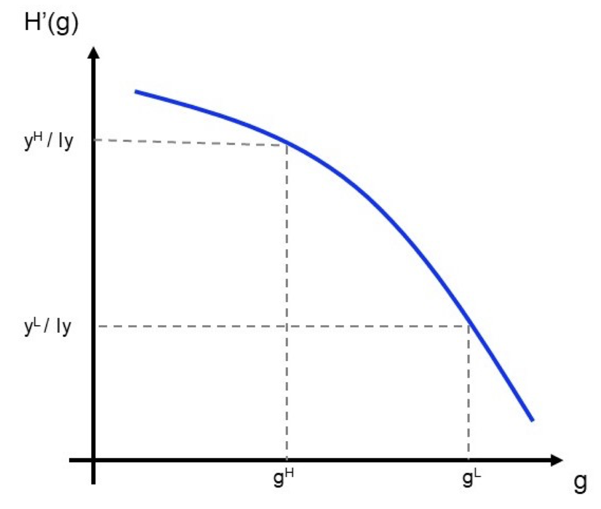

This chapter introduces how elections can be useful tools in democracies for governance. We first look at a model of how elections can help voters select good candidates to govern. Then, we look at how elections can help decide tax policy and public goods. Finally, we look at how elections can be tools to aggregate information across all voters to achieve better outcomes.
Elections as Selection Devices
A Model of Political Agency
We have 3 players: a voter, and 2 politicians (an incumbent I and a challenger C ). Our model will take place over two time periods, t \in \{1, 2\}.
Each time period t will have a bad policy outcome, or a good policy outcome: w_t \in \{0, 1\}. The probability of a good outcome depends both on the effort and competence of the elected politician in office during that time period.
Politicians j \in (I, C) each can have high competence, or low competence: \theta \in \{ \theta_H, \theta_L \}. The prior probability of any politician being competent is p \in (0, 1). Only the politician themselves know their own competence.
Politicians, if in office, can exert effort into making better policies. The sitting politician in period t can exert no effort, or a lot of effort: e_t \in \{0, 1 \}.
However, politicians in choosing to exert effort, will have some costs. The costs c are some function of effort e_t and type \theta: c(e_t, \theta).
\begin{split} & \underbrace{c(0, \theta_H) = c(0, \theta_L) = 0}_{\text{cost of no effort is always }0} \\ & \underbrace{c(1, \theta_H) = 1}_{\text{cost of effort for } \theta_H} \ < \ \underbrace{c(1, \theta_L) = 2}_{\text{cost of effort for } \theta_L} \end{split}
This is because more competent politicians will need less energy to achieve the same effort as low competence politicians, because of their competence.
The payoffs of politicians are given as a function of both R, the utility they gain from being in office (given they win the election), and subtracting the costs of putting in effort c(e_t, \theta):
u_j(e_1, e_2, \theta) = \gamma_{1j} (R - c(e_1, \theta)) + \gamma_{2j} (R - c(e_2, \theta))
Where \gamma_{tj} indicates if in time period t, the politician j \in \{I, C \} (either incumbent or challenger) is in office. When \gamma_{tj} = 1, the politician is in office, and when \gamma_{tj} = 0, the politician is not in office.
However, voters do not observe effort and competence. They only observe the outcome w_t is good or bad. The probability \pi of a good outcome w_t = 1 is:
\pi = Pr(w_t = 1) = \begin{bmatrix} & e_t = 0 & e_t = 1 \\ \theta_L & 0 & 0.5 \\ \theta_H & 0.5 & 1 \end{bmatrix}
Or in other words, if a low-competence politician puts no effort, there is 0% chance of a good outcome. If a low-competence politician puts in effort, there is a 50% chance of a good outcome. If a high-competence politician puts in no effort, there is a 50% chance of a good outcome. If a high-competence politician puts in effort, there is a 100% chance of a good outcome.
Outcome is not a perfect indication of the politician’s actions or type, but a good outcome is indicative of either higher effort or high competence.
Voter’s utility is dependent on the policy outcomes - they want the best policy outcomes for themselves:
u_i = w_1 + w_2
The timing of the game is as follows:
- Nature draws the type of the incumbent politician and the challenger politician \theta = \theta_H, \theta_L, at probability Pr(\theta = \theta_H) = p for each politician.
- Incumbent politician (already in office during t=1) decides how much effort to exert in period 1 e_1 \in \{0, 1\}.
- Period 1 outcome w_1 is realised.
- Voter either re-elects the incumbent, or elects the challenger based off of w_1.
- The elected politician (either incumbent if re-elected, or challenger) then decides how much effort to exert in period 2 e_2 \in \{0, 1\}.
- Period 2 outcome w_2 is realised.
Voter’s Incentives
Since this is a dynamic game, we should start from the end of the game, time period t=2. Based on the model, there is no election after period 2 (the world essentially ends).
We know that politicians exert some cost c(e_t, \theta) when exerting effort. However, when there is no election after t=2, there is no incentive to exert any cost. Thus, the only rational strategy for any politician j is to exert effort e_2 = 0.
What happens when effort e_2 = 0 is realised? If the politician in the 2nd round is type \theta_H, then there is a 50% chance of a good outcome, which gives the voter an expected utility of w_2 = \frac{1}{2} (1). When the politician in the 2nd round is type \theta_H, then there is a 50% chance of a bad outcome, which gives the voter an expected utility of w_2 = 0.
From this, we can see that the voter gets a higher expected utility in t=2 if the politician who occupies office in t=2 is type \theta_H. Thus, the goal of the voter now becomes to elect a \theta_H politician in the election before t=2.
Voters thus have 4 possible strategies to pursue:
- Re-elect only when outcome in period 1 is good: w_1 = 1.
- Re-elect only when outcome in period 1 is bad: w_0 = 0.
- Never re-elect no matter the outcome in period 1.
- Always re-elect no matter the outcome in period 1.
Strategies 3 and 4 is never rational, and I will not provide the full proof here. The simple reason is that if you always re-elect or never re-elect regardless of outcome, then neither candidate has any incentive to put any effort, since they know they will 100% be re-elected or not-elected.
Strategy 2 can be rational in certain circumstances (which is counterintuitive), but again, this is not particularly useful for the purposes of this model.
For the rest of the time, we will focus on strategy 1: voter only re-elects the incumbent if they see a good outcome w_1 = 1 in t=1.
Incumbent’s Decision
We are assuming that the voter only re-elects the incumbent if they see a good outcome w_1 = 1 in t=1. This implies that the probability of re-election for the incumbent I is equal to the probability of a good outcome w_1 = 1 in the first period t = 1.
We know that a politician’s utility is given by the following utility function:
u_j(e_1, e_2, \theta) = \gamma_{1j} (R - c(e_1, \theta)) + \gamma_{2j} (R - c(e_2, \theta))
Let us look at the incumbent’s j = C decisions in t=1. Should the exert effort or not? Let us test all four combinations of competence type \theta and effort level e_1.
If the incumbent is \theta_L, and he exerts no effort e_1=0, what happens? The incumbent will not have any cost c( 0, \theta_L) =0, since they are exerting no effort. But they will have 0% probability of producing a good outcome w_1 = 0, so they will never be re-elected. Thus, we know that \gamma_{2j} = 0, since they will never be in office in the second period. Thus, their utility is:
u_I(0,0, \theta_L) = 1 (R - 0) + 0 (R - c(e_2, \theta)) = R
If the incumbent is type \theta_L, but he exerts effort, he has a cost c(1, \theta_L) = 1, but also has a 50% chance of being re-elected to the second round (where no politician puts any effort, as seen above). Thus, his utility is:
u_I(1,0, \theta_L) = 1(R - 2) + \frac{1}{2}(R - 0) = R - 2 + \frac{1}{2}R
So, when should incumbent type \theta_L use effort e_1 = 1? Only when the payoff of e_1 = 1 is higher. Thus, we have the following inequality, and we can find the condition of R that makes it so type \theta_L wants to exert effort in t=1:
\begin{split} & u_I(1, 0, \theta_L) > u_I(0, 0, \theta_L) \\ & R - 2 + \frac{1}{2}R > R \\ & R > 4 \end{split}
Thus, incumbent with type \theta_L only wants to put in effort e_1 = 1 in t=1 if R>4.
Now let us do the same for \theta_H. If he puts in no effort e_1 = 0, he has a 50% chance of getting a good outcome w_1 = 1, and thus, a 50% of winning reelection. The utility is thus:
u_I(0, 0, \theta_H) = 1(R-0) + \frac{1}{2}(R-0) = \frac{3}{2}R
If type \theta_H puts in effort e_1 = 1, he has a 100% chance of getting a good outcome w_1 = 1, and a 100% chance of winning reelection. Thus, the utility is:
u_I(1, 0, \theta_H) = 1(R - 1) + 1(R-0) = 2R - 1
So, when should incumbent type \theta_H use effort e_1 = 1? Only when the payoff of e_1 = 1 is higher. Thus, we have the following inequality, and we can find the condition of R that makes it so type \theta_H wants to exert effort in t=1:
\begin{split} & u_I(1, 0, \theta_H) ≥ u_I(0, 0, \theta_H) \\ & 2R - 1 > \frac{3}{2}R \\ & R >2 \end{split}
Thus, incumbent with type \theta_H only wants to put in effort e_1 = 1 in t=1 if R>2.
We can create a graph of when the incumbents want to exert effort e_1 = 1 given the value of R:

We can see there are three different scenarios:
- When R<2, both types have no incentive to put any effort.
- When R \in (2, 4), only competent type \theta_H have an incentive to put in effort.
- When R > 4, both types have incentives to put in effort.
Voter’s Electoral Decision
We discussed above how there are the 3 different scenarios given the value of R. Let us test each scenario. We also assumed that the voter will re-elect if there is a good outcome w_1 = 1 in period t=1, and not re-elect if there is a bad outcome w_1 = 0.
Is this assumption of the strategy for the voter rational? Let us test each of the 3 scenarios given R to see if this strategy is rational for the voter. To do this, we will be using Bayes’ Rule.
Bayes’ Rule states the following:
\underbrace{Pr(A|B)}_{\text{posterior}} = \frac{\overbrace{Pr(B|A)}^{\text{likelihood}} \overbrace{Pr(A)}^{\text{prior}}}{\underbrace{Pr(B|A)Pr(A) + Pr(B|A^C)Pr(A^C)}_{\text{evidence: }Pr(B) \text{ expanded with law of total probability}}}
This will allow us to take our prior beliefs (such as the initial probability of high-competence), and update them given new information (like witnessing a good/bad policy outcome).
Remember that nature decides the type of the incumbent and challenger with prior probability p of being high competence \theta_h. Let us also remind us the probability of a good outcome, \pi = Pr(w_t = 1), given the type and effort of the incumbent:
\pi = Pr(w_t = 1) = \begin{bmatrix} & e_t = 0 & e_t = 1 \\ \theta_L & 0 & 0.5 \\ \theta_H & 0.5 & 1 \end{bmatrix}
Let us assume we are in the situation R<2, where neither play puts effort. We know that the voter wants to elect a high competence candidate \theta_H. What is the probability of the candidate being \theta_H, given we observe each outcome w_1 \in \{0, 1\}?
\begin{split} Pr(\theta_h | w_1 = 0) & = \frac{\overbrace{Pr(w_1 = 0|\theta_H)}^{0.5 \text{ (given by } \pi)} \overbrace{Pr(\theta_H)}^{p \text{ (prior)}}} {\underbrace{Pr(w_1 = 0|\theta_H)Pr(\theta_H)}_{\text{same as numerator}} + \underbrace{Pr(w_1 = 0|\theta_L)}_{1 \text{ (given by } \pi)} \underbrace{Pr(\theta_L)}_{1-p \text{ (prior)}}} \\ & = \frac{0.5p}{0.5 p + 1(1-p)} = \frac{p}{2-p} \end{split}
\begin{split} Pr(\theta_h | w_1 = 1) & = \frac{\overbrace{Pr(w_1 = 1|\theta_H)}^{0.5 \text{ (given by } \pi)} \overbrace{Pr(\theta_H)}^{p \text{ (prior)}}} {\underbrace{Pr(w_1 = 1|\theta_H)Pr(\theta_H)}_{\text{same as numerator}} + \underbrace{Pr(w_1 = 1|\theta_L)}_{0 \text{ (given by } \pi)} \underbrace{Pr(\theta_L)}_{1-p \text{ (prior)}}} \\ & = \frac{0.5p}{0.5p + 0(1-p)} = \frac{0.5p}{0.5p} = 1 \end{split}
Thus, we know that given we observe a bad outcome w_1 = 0, there is a \frac{p}{2-p} probability that the incumbent is type high competence \theta_H. We know that the challenger has the possibility of being \theta_H with probability p. Since:
\frac{p}{2-p} < p \quad (\text{since } p \in (0, 1))
That means that the challenger is more likely to be a high competence \theta_H politician, which means the rational thing to do is to not re-elect, and instead elect the challenger.
We also know that if we observe a good outcome w_1 = 1, there is a probability of 1 that the incumbent is high-type. This is a higher probability than p \in (0, 1), the probability the challenger is high competence \theta_H. Thus, if you observe a good outcome w_1, you should re-elect the incumbent.
This matches with our assumption that voter will re-elect if there is a good outcome w_1 = 1 in period t=1, and not re-elect if there is a bad outcome w_1 = 0.
Now, let us assume we are in the situation R\in (2, 4), where only the high competence type \theta_H puts effort. We know that the voter wants to elect a high competence candidate \theta_H. What is the probability of the candidate being \theta_H, given the two possible outcomes w_1 \in \{0, 1\}?
\begin{split} Pr(\theta_h | w_1 = 0) & = \frac{\overbrace{Pr(w_1 = 0|\theta_H)}^{0 \text{ (given by } \pi)} \overbrace{Pr(\theta_H)}^{p \text{ (prior)}}} {\underbrace{Pr(w_1 = 0|\theta_H)Pr(\theta_H)}_{\text{same as numerator}} + \underbrace{Pr(w_1 = 0|\theta_L)}_{1 \text{ (given by } \pi)} \underbrace{Pr(\theta_L)}_{1-p \text{ (prior)}}} \\ & = \frac{0p}{1(1-p)} = 0 \end{split}
\begin{split} Pr(\theta_h | w_1 = 1) & = \frac{\overbrace{Pr(w_1 = 1|\theta_H)}^{1 \text{ (given by } \pi)} \overbrace{Pr(\theta_H)}^{p \text{ (prior)}}} {\underbrace{Pr(w_1 = 1|\theta_H)Pr(\theta_H)}_{\text{same as numerator}} + \underbrace{Pr(w_1 = 1|\theta_L)}_{0 \text{ (given by } \pi)} \underbrace{Pr(\theta_L)}_{1-p \text{ (prior)}}} \\ & = \frac{1p}{1p + 0(1-p)} = \frac{p}{p} = 1 \end{split}
So we can see that if we observe w_1 = 0, there is a 0% chance that the incumbent is high competence \theta_H, so we should not re-elect and vote in the challenger. If we observe w_1 = 1, there is a 100% chance that the incumbent is high competence \theta_H, so we should re-elect. This matches with our assumption that voter will re-elect if there is a good outcome w_1 = 1 in period t=1, and not re-elect if there is a bad outcome w_1 = 0.
Finally, let us assume we are in the situation R> 4, where both types put effort. We know that the voter wants to elect a high competence candidate \theta_H. What is the probability of the candidate being \theta_H, given the two possible outcomes w_1 \in \{0, 1\}?
\begin{split} Pr(\theta_h | w_1 = 0) & = \frac{\overbrace{Pr(w_1 = 0|\theta_H)}^{0 \text{ (given by } \pi)} \overbrace{Pr(\theta_H)}^{p \text{ (prior)}}} {\underbrace{Pr(w_1 = 0|\theta_H)Pr(\theta_H)}_{\text{same as numerator}} + \underbrace{Pr(w_1 = 0|\theta_L)}_{0.5 \text{ (given by } \pi)} \underbrace{Pr(\theta_L)}_{1-p \text{ (prior)}}} \\ & = \frac{0p}{0.5(1-p)} = 0 \end{split}
\begin{split} Pr(\theta_h | w_1 = 1) & = \frac{\overbrace{Pr(w_1 = 1|\theta_H)}^{1 \text{ (given by } \pi)} \overbrace{Pr(\theta_H)}^{p \text{ (prior)}}} {\underbrace{Pr(w_1 = 1|\theta_H)Pr(\theta_H)}_{\text{same as numerator}} + \underbrace{Pr(w_1 = 1|\theta_L)}_{0.5 \text{ (given by } \pi)} \underbrace{Pr(\theta_L)}_{1-p \text{ (prior)}}} \\ & = \frac{1p}{1p + 0.5(1-p)} = \frac{2p}{2p + 1 - p} = \frac{2p}{1+ p} \end{split}
So we can see that if we observe w_1 = 0, there is a 0% chance that the incumbent is high competence \theta_H, so we should not re-elect and vote in the challenger. If we observe w_1 = 1, there is a \frac{2p}{1+p} > p chance that the incumbent is high competence \theta_H, so we should re-elect. This matches with our assumption that the voter will re-elect if there is a good outcome w_1 = 1 in period t=1, and not re-elect if there is a bad outcome w_1 = 0.
Thus, the assumption that the voter will re-elect if there is a good outcome w_1 = 1 in period t=1, and not re-elect if there is a bad outcome w_1 = 0 is indeed rational.
Interpretation of the Outcome
Thus, we have found the equilibrium strategies of this game:
- For voters, they will only re-elect if they see a good outcome w_1 = 1, and vote for the challgner if they see a bad outcome w_1 = 0.
- For the incumbent in the first round: if R < 2, then neither type will put effort, so e_1 = 0. If R \in (2, 4), then only \theta_H puts in effort. If R > 4, then both types put in effort. In the second round, all types of incumbents will put e_2 = 0 effort.
- For the challenger, if they are elected for the second round, they will put e_2 = 0 effort.
What does this equilibrium outcome tell us?
When the benefits of holding offices are low (R < 2), incumbents do not really value re-election. Thus incumbents will not put any effort into their jobs. Elections here fail to incentives politicians to work hard. Elections in this scenario do always screen out and vote out low competence politicians, but they sometimes also mistakenly vote out high competence politicians as well.
When the benefits of holding offices are intermediate (R \in (2, 4)), only competent incumbents want to seek re-election and will put in effort. The cost of effort given the rewards of holding office are too high for low-competence incumbents, so they will not put in effort. Thus, elections here incentives good politicians. Elections also are able to perfectly screen politicians: low competence ones are always voted out, and high competence ones are always re-elected.
When the benefits of holding office are high (R > 4), all politicians are motivated to seek re-election, and all politicians put in effort. Election is able to always successful re-elect good politicians, but some bad politicians are also re-elected.
Essentially what we have shown is a trade-off between selection and incentives. When the benefits of holding office are high, politicians are incentivised to put in effort, however, this also means that some low competence individuals will be re-elected. When the benefits of holding office are low, politicians are not incentivsed to put in effort, but we can almost always vote out low-comeptence individuals.
This model shows how the benefits of holding office, such as pay, receiving gifts and lobbying, and power, can impact how politicians behave. There is often discussion around paying politicians too high of salaries. However, this model shows that paying higher salaries actually motivates politicians to put more effort.
Elections, Taxes and Public Goods
A Model of Public Finance
Elections can also be a way in which the amount of public goods provision can be decided, and the amount of taxes can be decided.
Let us say we have n number of citizens. Each citizen i is different from each other, with varying incomes y_i. Citizens utility is derived of two things:
- How much they consume privately, c_i (like stuff they buy, food the eat, consumer spending).
- Their benefit from public goods provided by the government. The government will provide g amount of public goods, which will give the citizen H(g) of utility, where H is a function converting the amount of public goods g into utility.
The government provides an amount of the public good g ≥ 0. However, they can only pay for it through taxes t \in [0, 1] (we are assuming no borrowing for this model). Increasing taxes t will decrease citizen’s income y_i, which will reduce the amount they will be able to consumer c_i. Let us assume that taxes are only used for public goods.
We can define the amount of public goods as g, which will be equal to:
\underbrace{ty_1 + ty_2 + \dots + ty_n}_{\text{taxes collected from all citizens}} = n t \bar y = g
Where \bar y is the average income of all citizens. We will assume that the mean income \bar y is greater than the median income y_m, since income is almost always right-skewed.
Thus, the utility of any citizen i is their utility from both private consumption and public goods:
u_i = c_i + H(g)
Private consumption c_i of a citizen i, will be defined as the amount of income remaining after taxes. We know that t y_i is taxed, so (1-t)y_i is untaxed income. Thus:
c_i = (1-t)y_i
We will also assume that the utility derived from the public good, H(g), has decreasing marginal utility. This means that adding more and more g will always yield a higher utility, however, with each additional g, the gain in utility is smaller.
Citizen’s Maximum Utility
Now the question is, what amount of public good g (which directly impacts taxes t and private consumption c_i), is the optimal amount which maximises each citizen’s utility?
Recall that citizen’s utility is u_i = c_i + H(g). We also defined c_i = (1-t)y_i. Let us plug c_i into the utility function:
u_i = (1-t)y_i + H(g)
Recall that earlier, we derived that nt \bar y = g. We can solve for t to get t = \frac{g}{n \bar y}. Now plugging that in to the utility function, we get:
u_i = \left(1 - \frac{g}{n \bar y} \right)y_i + H(g)
We now have only one variable g in our utility function, so u_i is a function of g. How do we find the maximum utility for any citizen i? We can find the first order condition to maximise u_i(g):
\begin{split} u_i(g) & = \left(1 - \frac{g}{n \bar y} \right)y_i + H(g) \\ u_i(g) & = y_i - \frac{y_i}{n \bar y}g + H(g) \\ u_i'(g) & = 0 - \frac{y_i}{n \bar y} + H'(g) \\ u'_i(g) & = -\frac{y_i}{n \bar y} + H'(g) \\ 0 & = -\frac{y_i}{n \bar y} + H'(g) \\ H'(g) & = \frac{y_i}{n \bar y} \end{split}
So we know the maximisation of utility condition is H'(g) = \frac{y_i}{n \bar y}. What does this tell us?
First, we know H(g) has decreasing marginal utility, which means H'(g) must be decreasing as g increases (see blue line below). We also know by H'(g) = \frac{y_i}{n \bar y}, that when y_i increases, H'(g) should also increase, and when y_i decreases, H'(g) decreases. We can put this in a graph:

Let us take two citizens, y^H, who has a large income, and y_L, who has a low income. For the high income person y^H, the corresponding g^L on the blue line is quite small. For the low income person y^L, the corresponding g^H on the blue line is quite large.
This makes sense: the higher income you are (the richer you are), you probably care less about public goods g, and would rather have lower taxes that benefit you more. If you have a lower income, you would rather have more government services and public goods.
Electoral Model and Conclusions
Now we know the maximisation of utility for each citizen i, what about the level of public goods g that is implemented in a country?
In a democratic country, elections decide the policy platforms. Let us have two candidates A and B who are competing on the amount of public goods provision, choosing positions p_A and p_B regarding how much g to provide. The party who wins the majority of votes will implement their plan.
According to the downsian model, the median voter is the pivotal voter in which both candidates will converge to. Remember that the median voter has an income of y_m. Thus, the maximisation of utility condition for the median voter is:
H'(g) = \frac{y_i}{n \bar y} = \frac{y_m}{n \bar y}
Remember that a higher H'(g) corresponds to a lower g. What does the above equation tell us?
First, if y_m is much smaller than \bar y, then H'(g) will decrease and g will be higher. That means in a society with more skewed income distribution (where the mean income is significantly higher than the median) will have higher public good provision and higher taxes.
Second, a richer country on average would have a higher \bar y. A higher \bar y means a lower H'(g), and a larger g. This thus means that richer countries on average should have larger public goods provisions and larger taxes.
The first prediction does not seem necessarily to be true. Many ultra-unequal countries with huge skews of income do not have strong welfare states, while more equal countries (like in many nordic countries) do have strong welfare systems.
The second prediction does seem to be more accurate. In general, the countries with the largest welfare systems and highest taxes are developed nations who have significantly higher average incomes.
You might point out that these predictions depend on the assumption that the Downsian model is correct, and that indeed, politicians converge at the median voter. However, in the last chapter, we discussed how this convergence often does not occur.
However, even using another model, like the Probabilistic Voting model, we would still get a similar prediction. The probablistic model predicts divergence, but this divergence shifts relative to the positioning of the median voter. Thus, the 2 predictions we made would still apply to non-converging models of electoral competition.
Elections as Information Aggregators
Model of Information Aggregation
Many scholars believe that democracy is about finding the “correct” policy (ex. Russeau’s Social Contract). The belief is that there is some true “will of the people” that will benefit everyone, and the goal of elections is to find this correct common good.
No one individually knows exactly what the correct policy is. However, some people have some idea of what it could be. Elections could then serve as a way to “pool” everyone’s information together to find the correct policy (ex. wisdom of the crowd), instead of relying on everyone’s individual model.
Let us say there are three voters in a country, i \in \{1, 2, 3\}. They have to make a choice between two policies \{A, B\}, and they will make this choice by majority vote.
There are two states of the world \theta \in \{\theta_A, \theta_B\}. In world \theta_A, policy A is the correct policy, and in \theta_B, policy B is the correct policy.
The state of the world \theta \in \{\theta_A, \theta_B\} is unknown. The voters only know that there is a probability \pi of the state being \theta_A:
\begin{split} & Pr(\theta_A) = \pi \\ & Pr(\theta_B) = 1-\pi \end{split}
Before casting their ballot, each voter receives a signal s_i \in \{0, 1\}. Signal 0 suggests that policy A is correct (suggests \theta_A), and signal 1 suggests policy B is correct (suggests \theta_B). The probability of receiving each signal is as follows:
\begin{split} & Pr(s_i=0|\theta_A) = q^a > \frac{1}{2} \\ & Pr(s_i=1|\theta_B) = q^b > \frac{1}{2} \end{split}
Or in other words, there is more than a 50% chance that the signal a player receives is correct about the state of the world.
The payoffs for the players are as follows:
u_i = \begin{cases} 1 \quad \text{if correct policy is implemented} \\ 0 \quad \text{if otherwise} \end{cases}
The timing of the game is as follows:
- Nature determines the state of the world \theta \in \{\theta_A, \theta_B\} where Pr(\theta_A) = \pi.
- The signal s_i \in \{0, 1\} is received by every voter.
- All voters cast their votes for policy A or B simultaneously.
- The policy that gets the most votes is implemented.
Sincere Voting
Sincere voting is when each voter simply follows her signal. Under this assumption, the strategy of voter i \in \{1, 2, 3\} would be:
\sigma_i = \begin{cases} \text{vote A after } s_i = 0 \\ \text{vote B after } s_i = 1 \end{cases}
With the new information of the signal s_i, each voter can update their prior belief about the state in the world through Bayes’ rule.
Bayes’ Rule states the following:
\underbrace{Pr(A|B)}_{\text{posterior}} = \frac{\overbrace{Pr(B|A)}^{\text{likelihood}} \overbrace{Pr(A)}^{\text{prior}}}{\underbrace{Pr(B|A)Pr(A) + Pr(B|A^C)Pr(A^C)}_{\text{evidence: }Pr(B) \text{ expanded with law of total probability}}}
This will allow us to take our prior beliefs (such as the initial probability of state \theta), and update them given new information (like witnessing the signal s_i).
After signal s=0, what does voter i believe the probability that the state of the world is \theta_A?
\begin{split} \underbrace{Pr(\theta_A|s_i = 0)}_{\text{updated belief of } \theta_A} & = \frac{\overbrace{Pr(s_i = 0|\theta_A)}^{q^a \ (s_i \text{ accuracy)}} \overbrace{Pr(\theta_A)}^{\pi \text{ (prior)}}} {\underbrace{Pr(s_i = 0|\theta_A) Pr(\theta_A)}_{\text{same as numerator}} + \underbrace{Pr(s_i = 0|\theta_B)}_{(1-q^b) \ s_i \text{ inaccurate}} \underbrace{Pr(\theta_B)}_{(1- \pi) \text{ (prior)}}} \\ & = \frac{q^a\pi}{q^a \pi + (1-q^b)(1-\pi)} \end{split}
After signal s_i = 1, what does voter i believe the probability the state of the world is \theta_B?
\begin{split} \underbrace{Pr(\theta_B|s_i = 1)}_{\text{updated belief of } \theta_B} & = \frac{\overbrace{Pr(s_i = 1|\theta_B)}^{q^b \ (s_i \text{ accuracy)}} \overbrace{Pr(\theta_B)}^{(1-\pi) \text{ (prior)}}} {\underbrace{Pr(s_i = 1|\theta_B) Pr(\theta_B)}_{\text{same as numerator}} + \underbrace{Pr(s_i = 1|\theta_A)}_{(1-q^a) \ s_i \text{ inaccurate}} \underbrace{Pr(\theta_A)}_{\pi \text{ (prior)}}} \\ & = \frac{q^b(1-\pi)}{q^b(1- \pi) + (1-q^a)\pi} \end{split}
Rationally, a voter should base their decision on their updated posterior beliefs. Thus, having recieved s_i = 0, you should only follow the signal (which suggests \theta_A), only if your posterior belief also suggests Pr(\theta_A| s_i = 0) > Pr(\theta_B|s_i = 0).
\begin{split} & Pr(\theta_A|s_i = 0) > Pr(\theta_B|s_i = 0) \\ & Pr(\theta_A|s_i = 0) > \underbrace{1 - Pr(\theta_A|s_i = 0)}_{\text{complement probability}} \\ & \frac{q^a\pi}{q^a \pi + (1-q^b)(1-\pi)} \ > \ 1- \frac{q^a\pi}{q^a \pi + (1-q^b)(1-\pi)} \\ & q^a \pi \ > \ q^a \pi + (1-q^b)(1-\pi) \left(1- \frac{q^a\pi}{q^a \pi + (1-q^b)(1-\pi)} \right) \\ & q^a \pi \ > \ q^a \pi + (1-q^b)(1-\pi) - q^a \pi \\ & q^a \pi \ > \ (1-q^b)(1-\pi) \\ & \frac{q^a \pi}{1 - q^b} \ > \ 1 - \pi \\ & \frac{q^a}{1 - q^b} \ > \ \frac{1 - \pi}{\pi} \\ \end{split}
Thus, voter i should only sincerely follow their signal s_i = 0 if \frac{q^a}{1 - q^b} > \frac{1 - \pi}{\pi}.
We can also do the same with having received s_i = 1, you should only follow the signal (which suggests \theta_B if:
\begin{split} & Pr(\theta_B|s_i = 1) > Pr(\theta_A|s_i = 1) \\ & Pr(\theta_B|s_i = 1) > \underbrace{1 - Pr(\theta_B|s_i = 1)}_{\text{complement probability}} \\ & \frac{q^b(1-\pi)}{q^b(1- \pi) + (1-q^a)\pi} > 1 - \frac{q^b(1-\pi)}{q^b(1- \pi) + (1-q^a)\pi} \\ & q^b(1-\pi) \ > \ q^b(1- \pi) + (1-q^a)\pi \left( 1 - \frac{q^b(1-\pi)}{q^b(1- \pi) + (1-q^a)\pi} \right) \\ & q^b(1-\pi) \ > \ q^b(1- \pi) + (1-q^a)\pi - q^b(1- \pi) \\ & q^b(1-\pi) \ > \ (1-q^a)\pi \\ & \frac{q^b}{(1-q^a)} \ > \ \frac{\pi}{(1-\pi)} \end{split}
Thus, voter i should only sincerely follow their signal s_i = 1 if \frac{q^b}{(1-q^a)} > \frac{\pi}{(1-\pi)}.
Thus, the rationality of sincerely voting (following your signal) depends on the probabilities of \pi, q^b, and q^a.
For example, if \pi = \frac{1}{2}, if you plug that in (and consider that q^a, q^b > \frac{1}{2}), sincere voting is always optimal at an individual level.
However, so far, we have only focused on each voter’s own signal. What about the other signals of other voters? These could also provide information that we have not yet considered.
Information Aggregation
Suppose voter 3 has received s_3=1. They must decide how to vote.
- If voters 1 and 2 both voted for B, then their vote does not matter.
- If voters 1 and 2 both voted for R, then their vote does not matter.
- Their vote only matters if voter 1 and 2 split their votes.
This concept of being able to determine an election is called being pivotal.
Being a pivotal voter provides information. After all, there is only one true state of the world \theta \in \{\theta_A, \theta_B\}.
Let us say the state of the world is \theta_A. What is the probability of the first 2 voters getting different signals? We know that probability of 2 independent events happening is their product. Thus:
\begin{split} Pr(s_1 ≠ s_2 | \theta_A) = & \ \underbrace{\left(Pr(s_1 = 0|\theta_A) Pr(s_2 = 1 | \theta_A)\right)}_{\text{probability that } s_1 = 0, \ s_2 = 1} \\ & \qquad + \underbrace{\left(Pr(s_1 = 1|\theta_A) Pr(s_2 = 2 | \theta_A)\right)}_{\text{probability that } s_1 = 1, \ s_2 = 0} \\ = & \ q^a(1-q^a) + (1-q^a) q^a \\ = & \ 2q^a(1-q^a) \end{split}
Now let us say the state of the world is \theta_B. What is the probability of the first 2 voters getting different signals?
\begin{split} Pr(s_1 ≠ s_2 | \theta_B) = & \ \underbrace{\left(Pr(s_1 = 0|\theta_B) Pr(s_2 = 1 | \theta_B)\right)}_{\text{probability that } s_1 = 0, \ s_2 = 1} \\ & \qquad + \underbrace{\left(Pr(s_1 = 1|\theta_B) Pr(s_2 = 2 | \theta_B)\right)}_{\text{probability that } s_1 = 1, \ s_2 = 0} \\ = & \ (1-q^b)q^b + q^b(1-q^b) \\ = & \ 2q^b(1-q^b) \end{split}
This is new information for voter 3 to take in. Before with Bayes’ rule, we only considered their own signal s_3. Now, they have to consider the additional information of being pivotal.
Strategic Voting
So if voter 3 is pivotal, that means they now have additional information beyond just the signal s_3 that they received. This means that this could affect their updated posterior belief in the state of the world.
For example, given voter 3 has recieved s_3 = 1 signal, what is their belief that the state of the world matches the signal (which implies \theta_B)? I have shortened “pivotal” to “piv” in the equations below:
\begin{split} Pr(\theta_B|s_3 = 1, \text{piv}) & = \frac{\overbrace{q^b}^{\text{our info}} \times \overbrace{2q^b(1-q^b)}^{\text{other voters info}}}{\underbrace{q^b}_{\text{our}} \times \underbrace{2q^b(1-q^b)}_{\text{other voters}} + \underbrace{(1- q^a)}_{\text{our}} \times \underbrace{2q^a(1-q^a)}_{\text{other voters}}} \\ & = \frac{2(q^b)^2(1-q^b)}{2(q^b)^2(1-q^b) + 2q^a(1-q^a)^2} \\ & = \frac{2(q^b)^2(1-q^b)}{2 \left[(q^b)^2(1-q^b) + q^a(1-q^a)^2 \right]} \\ & = \frac{(q^b)^2(1-q^b)}{(q^b)^2(1-q^b) + q^a(1-q^a)^2} \\ \end{split}
Thus, voter 3 should vote for B after s_i = 3 if their updated posterior belief is that \theta_B is more likely:
\begin{split} & \frac{(q^b)^2(1-q^b)}{(q^b)^2(1-q^b) + q^a(1-q^a)^2} ≥ \frac{1}{2} \\ & (q^b)^2(1-q^b) ≥ \frac{(q^b)^2(1-q^b) + q^a(1-q^a)^2}{2} \\ & 2(q^b)^2(1-q^b) ≥ (q^b)^2(1-q^b) + q^a(1-q^a)^2 \\ & (q^b)^2(1-q^b) ≥ q^a(1-q^a)^2 \\ & \frac{(q^b)^2(1-q^b)}{q^a(1-q^a)^2} ≥ 1 \\ & \frac{1-q^b}{q^a} \left( \frac{q^b}{1-q^a}\right)^2 ≥ 1 \\ & \underbrace{\left( \frac{q^b}{1-q^a}\right)}_{\text{3's signal}} \underbrace{\frac{1-q^b}{q^a}\left( \frac{q^b}{1-q^a}\right)}_{\text{other signals given pivotal}} ≥ 1 \end{split}
That is the condition for which voter 3 should vote sincerely following their signal s_3 = 1.
This condition can be violated. For example, let us suppose q^a = 0.6, and q^b = 0.9. We can plug it into the formula above:
\left(\frac{0.9}{1-0.6}\right) \frac{1-0.9}{0.6}\left(\frac{0.9}{1-0.6}\right) = 0.84 < 1
Thus, given these probabilities, sincere voting is not optimal for voter 3 if they recieve s_3 = 1. Instead, voter 3 should vote against their signal, and vote for A.
Why is this the case? Well remember, q^a is the likelihood of recieving the correct signal s-i = 0 in world \theta_A:
Pr(s_i=0|\theta_A) = q^a = 0.6
What does that imply? That means if the world is truly \theta_A, there is a 40% chance of receiving the wrong signal (i.e. signal s_i = 1).
On the other hand, with q^b = 0.9, that means that if the world was \theta_B, there is only a 10% of recieving the wrong signal (i.e. signal s_i = 0).
Thus, because we know the other two voters got different signals, we know one voter got a wrong signal, and that is far more likely that this resulted from state of the world \theta_A. When incorporating this information with our own signal s_3, we realise that the state of the world being \theta_A is more Kelly.
Interpretation of Result
The idea of this is that majority rule allows voters to aggregate information. If everyone was just voting on their own signals (i.e. their own knowledge about the world), the chances of getting the wrong policy are high.
However, in majority rule, by viewing other people’s information, we can take that information to make a better understanding of our own information.
However, all of this discussion relies on one key assumption: that there is a correct policy, and the goal of democracy is to find that policy.
Many scholars disagree with the idea of a “correct policy” for everyone. Some believe democracy is more about ideological conflict, while others believe it is more about selecting the right representatives.
However, this does not mean that this idea of elections is completely useless. Some cases, like criminal trials, civil trials, or academic misconduct meetings, will also involve voting by members/juries/citizens. For these cases, there are likely a more realistic notion of a “correct” decision.